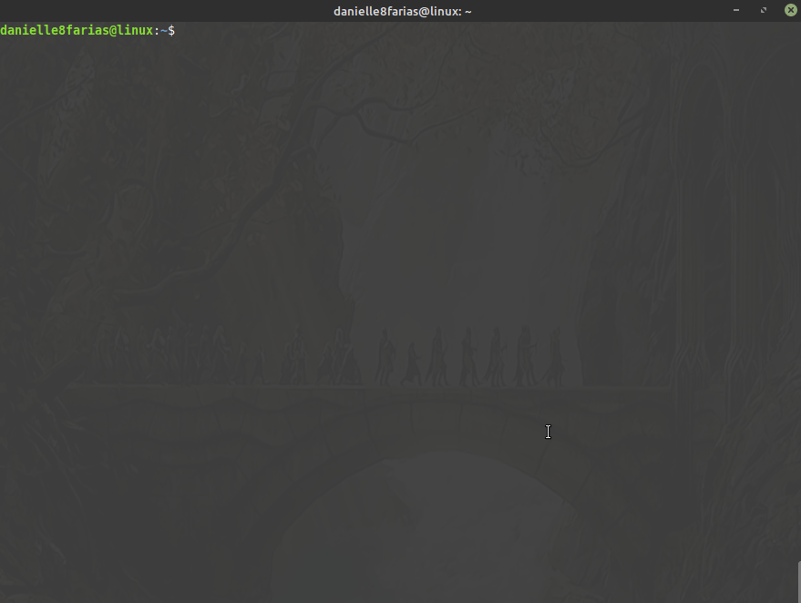
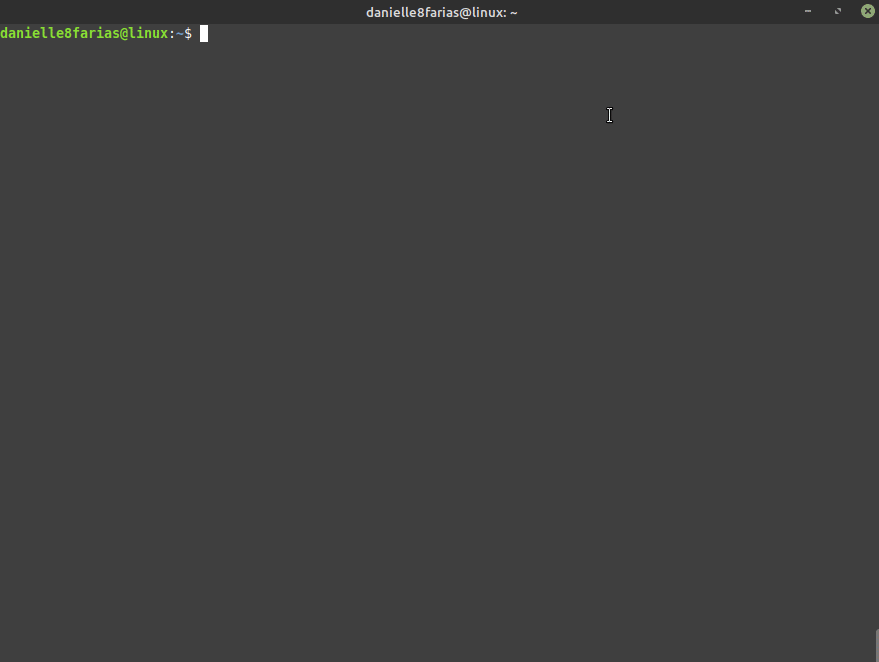

Essa instrução serve para as distros Linux baseadas no Debian (Ubuntu, Mint e derivados) e que usam a ferramenta apt.
Usando o apt
$ sudo apt remove <nome_do_programa>
- $ indica que você deve usar o usuário comum para fazer essa operação.
- sudo serve para pedir permissões de administrador temporariamente.
- apt do inglês, Advanced Package Tool, em português, Ferramenta de Empacotamento Avançada; é a ferramenta que nos ajuda na instalação, atualização e desinstalação de programas, entre outras funções.
- remove é o comando para remover, indicando ao apt o que fazer.
- digite o nome do programa sem os sinais < e >.
Provavelmente, após esse comando o sistema irá pedir a **senha** que você configurou no início da instalação do sistema operacional; além do pedido de confirmação da desinstalação.
Esse comando remove os pacotes, mas deixa os dados de configurações. Para removê-lo por completo, incluindo as configurações, utilize:
$ sudo apt purge <nome_do_programa>

Usando o dpkg
Você também pode usar o dpkg para remover pacotes .deb que foram instalados. Assim,
$ sudo dpkg -r <nome_do_programa>
- dpkg do inglês, *Debian Package*, é uma ferramenta que gerencia pacotes .deb
- r é o comando de remover, indicando ao dpkg o que fazer.
Para remover inclusive as configurações, digite:
$ sudo dpkg -P <nome_do_programa>
- P do inglês, purge, para limpar.